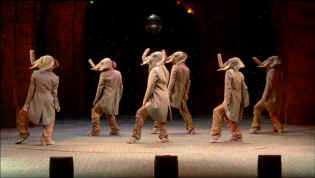
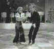

|
Tall Guy/ B+, B |
|
Miramax/1989/85/ANA 1.85 |
It is so refreshing to find an original and engaging
comedy that makes its audience comfortable in joining in its jubilation. The
Tall Guy not only achieves this distinction, it manages at the same
time to paint an enjoyable and credible romance between stars Jeff
Goldblum and Emma Thompson, all the same never sacrificing love to its
main mirth making mission . It even manages to utilize voice over
narration as a funny and evanescent device.
 |
|
Six swinging trunks.
©Miramax
|
Jeff Goldblum has never had a part that
matched his particular talents and physicality so well. Goldblum is a
laugh riot as London-based American Dexter King, a struggling actor whose
chief claim to thespian immortality is a five year run as the abused butt
of "Rubber Face Review" star Ron Anderson (A rather dark and
nasty Rowan Atkinson.). The bits from the review are in the grand
"Pythonesque" British music hall tradition of absolute madness.
Goldblum's screen veneer of insecurity and awkwardness are very convincing
and he proves coolly nonchalant through some of the most outrageous
situations with landlady and neighbors. Emma Thompson, before setting
filmdom on its ear with a number of award caliber performances, is very
much a vision of an earthy Julie Andrews as Dexter's romantic ideal, Kate
Lemmon. Thompson is clearly in support in this film, but she makes the
most of a role that could easily have been eclipsed by the sunburst of
broad humor that drives The Tall Guy. She and Goldblum make a
realistic romantic couple and Thompson is quite the fine comedienne.
The fine screenplay is written by frequent Rowan
Atkinson collaborator Richard Curtis, who in recent years has delivered
some extremely successful British comedies such as Four Weddings and a
Funeral, Bean,
and Bridget
Jones' Diary. The most inspired development of the screenplay is
the spoof of "highbrow" musicals, "Elephant." The
ridiculous production is King's big opportunity after a break with mean
spirited Anderson. The small scale production numbers are filled with
belly laughs and are reminiscent of another wild cinematic spoof,
"Springtime for Hitler," in The Producers.
Comic actor/director Mel Smith made an auspicious
debut behind the camera with The Tall Guy. Nothing he's done since
has come close to the controlled madness. His direction is crisp and his
use of irreverent montage a joy. The silly production montage "Could
This Be Love," takes the viewer totally by surprise and is a coup for
Smith's daring construction.
The Tall Guy makes fun of actors,
directors, doctors, and nymphos. Best seen in the company of a receptive
audience, the chain of infectious laughter will surely make you miss some
of the comic inventiveness, but that's okay, because the film stands up
well to subsequent visits.
Good color depth and overall detail are prevalent
in The Tall Guy on DVD. Check out the color and detail on
Dexter's colorful pullover. Shadow detail reveals subtle shadings quite
nicely. This is a cinematic looking transfer with a smooth look, sharp
without being edgy. Excellent light output makes for effortless viewing. A
few scenes are slightly washed out or overexposed.
|
|
|
|

Selections from the feature archive include articles on Akira Kurosawa, Frank Darabont, Blonde Bimbos, Hollywood Street Gangs, or Vietnam: The Hollywood Pariah, and many
more....
Gotta Dance
 Fred and Ginger tapped their way into the hearts of
movie fans everywhere. Stu Kobak takes a look at some of those
dance movies that gifted audiences toe-tapping pleasure. Click on the
image to get in on the beat.

The Movie Poster
Archive includes extensive poster images from the films of stars like
Susan Hayward, Kirk Douglas, Katharine Hepburn and many more. Our
featured star is Tyrone Power.

General, The /A,B+

Irish gang leader Martin Cahill through the lens of John Boorman makes
fascinating viewing. Watch it in black and white, Boorman's choice.


Mystery writer Fred Hunter digs into classic films on DVD. Check out his
insightful reviews at The Classics on DVD.
 The Cinematheque is a cultural,
arts organization that programs year-round specialty film series at the
newly renovated, landmark 1922 Egyptian Theatre on
Hollywood Boulevard! The Cinematheque is a cultural,
arts organization that programs year-round specialty film series at the
newly renovated, landmark 1922 Egyptian Theatre on
Hollywood Boulevard!
 Have you visited
Home Theater
Talk lately? One of the friendliest places on the Net for Home
Theater and DVD discussion, you can get help for installation problems or
simply share your opinions with other Vidiots. Have you visited
Home Theater
Talk lately? One of the friendliest places on the Net for Home
Theater and DVD discussion, you can get help for installation problems or
simply share your opinions with other Vidiots.
|